Yuzhe Gu 顾宇喆PhD StudentLarge Model Center, Shanghai AI Laboratory
|

|
Biography
I am a PhD student at Shanghai Jiao Tong University, in the joint program at Shanghai AI Laboratory, advised by Wenwei Zhang and Kai Chen. Before that, I received the bachelor degree at Wuhan University in 2024.
My research interests lie primarily in the area of Large Language Model (LLM). I'm focusing on improving the reasoning and knowledge capabilities of LLMs. I also have experience about the reducing hallucination in LLMs, including the annotation, detection and mitigation of hallucinations.
Discussions and cooperations are welcomed!
News
- [2026.02] We release Intern-S1-Pro, a trillion-scale MoE multimodal scientific reasoning model.
- [2025.12] Our system Intern-S1-MO has achieved gold medal in the China Mathematical Olympiad (CMO) 2025.
- [2025.07] We release Intern-S1, an advanced open-source scientific multimodal reasoning model.
- [2025.07] Our paper OREAL is accepted by COLM 2025.
- [2025.01] Our paper Mask-DPO is accepted by ICLR 2025.
- [2024.12] We release InternThinker, a powerful reasoning model.
- [2024.09] Our paper ANAH-v2 is accepted by NeurIPS 2024.
- [2024.05] Our paper ANAH is accepted by ACL 2024.
Projects
- Intern-S1-Pro: a trillion-scale MoE multimodal scientific reasoning model.
- Intern-S1-MO: a multi-agent system for olympiad-level mathematical problem solving.
- Intern-S1: an advanced open-source scientific multimodal reasoning model.
- InternThinker: a powerful reasoning model.
- Lagent: a lightweight open-source framework that allows users to efficiently build LLM-based agents.
- InternLM: state-of-the-art open-source LLMs varying from 7B to 123B.
Awards
- Gold Medal in the China Mathematical Olympiad (CMO), 2025
- Outstanding Undergraduate of Wuhan University, 2024
- Lei Jun Excellence Scholarship of Wuhan University, 2024 (10w RMB)
- First Prize Excellence Scholarship of Wuhan University, 2021, 2022, 2023
Academic Service
- Reviewer for: ICML2025-2026, NeurIPS2025, ICLR2026, COLM2025-2026, CVPR2026, ECCV2026.
Selected Publications
* denotes equal contribution.Technical Reports
- Intern-S1-Pro: Scientific Multimodal Foundation Model at Trillion Scale
- InternVL3.5: Advancing Open-Source Multimodal Models in Versatility, Reasoning, and Efficiency
- Intern-S1: A Scientific Multimodal Foundation Model
- InternLM2 Technical Report
(Co-) First author Papers
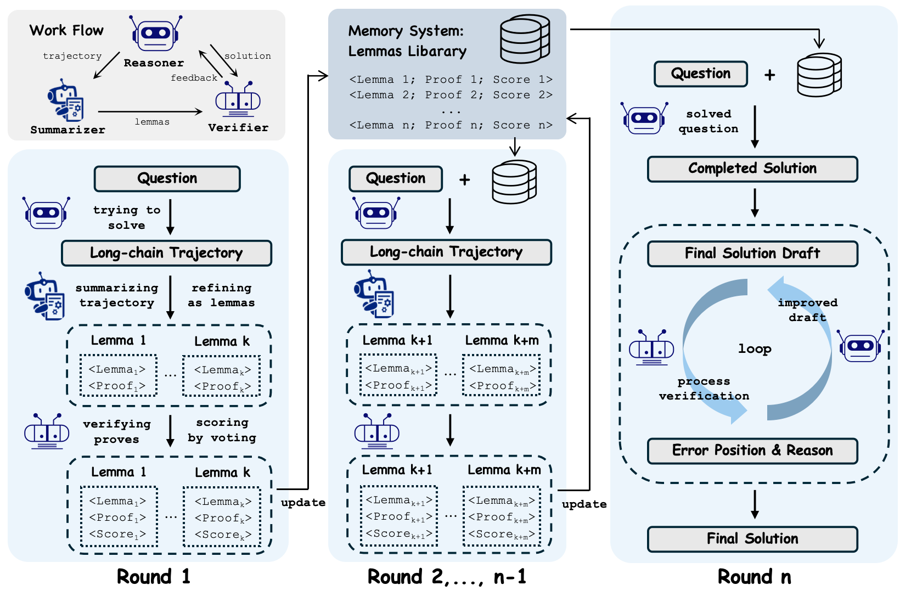 |
Long-horizon Reasoning Agent for Olympiad-Level Mathematical Problem Solving
Songyang Gao*, Yuzhe Gu*, Zijian Wu*, Lingkai Kong*, Wenwei Zhang*, Zhongrui Cai, Fan Zheng, Tianyou Ma, Junhao Shen, Haiteng Zhao, Duanyang Zhang, Huilun Zhang, Kuikun Liu, Chengqi Lyu, Yanhui Duan, Chiyu Chen, Ningsheng Ma, Jianfei Gao, Han Lyu, Dahua Lin, Kai Chen technical report [Paper] [Project] |
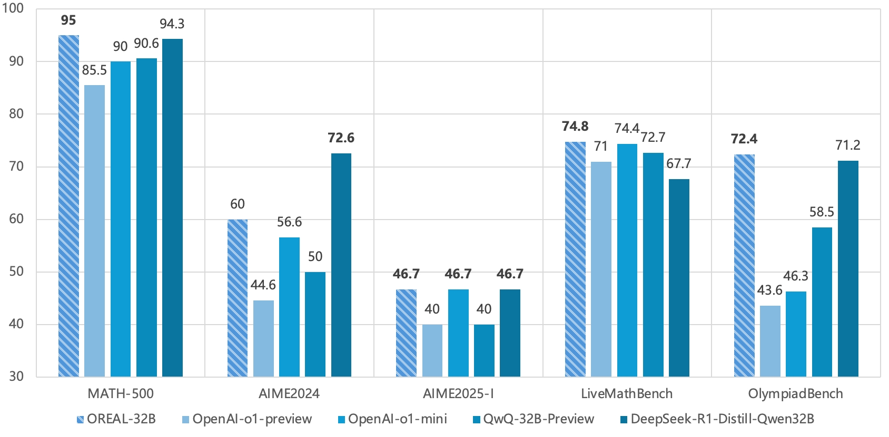 |
Exploring the Limit of Outcome Reward for Learning Mathematical Reasoning
Chengqi Lyu*, Songyang Gao*, Yuzhe Gu*, Wenwei Zhang*, Jianfei Gao, Kuikun Liu, Ziyi Wang, Shuaibin Li, Qian Zhao, Haian Huang, Weihan Cao, Jiangning Liu, Hongwei Liu, Junnan Liu, Songyang Zhang, Dahua Lin, Kai Chen The 2nd Conference on Language Modeling (COLM 2025) [Paper] [Code] [Project] |
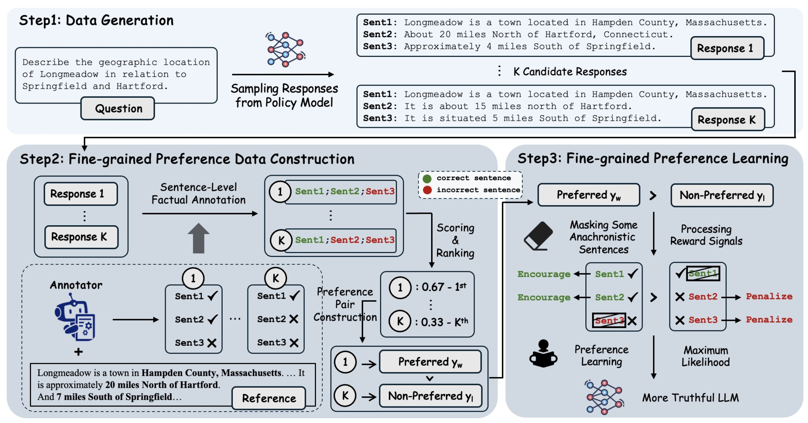 |
Mask-DPO: Generalizable Fine-grained Factuality Alignment of LLMs
Yuzhe Gu, Wenwei Zhang, Chengqi Lyu, Dahua Lin, Kai Chen The Thirteenth International Conference on Learning Representations (ICLR 2025) [Paper] [Code] |
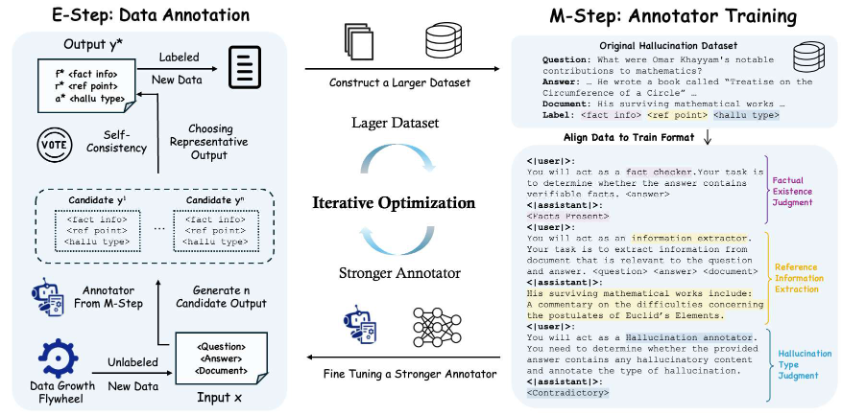 |
ANAH-v2: Scaling Analytical Hallucination Annotation of Large Language Models
Yuzhe Gu*, Ziwei Ji*, Wenwei Zhang, Chengqi Lyu, Dahua Lin, Kai Chen The Thirty-eighth Annual Conference on Neural Information Processing Systems (NeurIPS 2024) [Paper] [Code] [Project] |
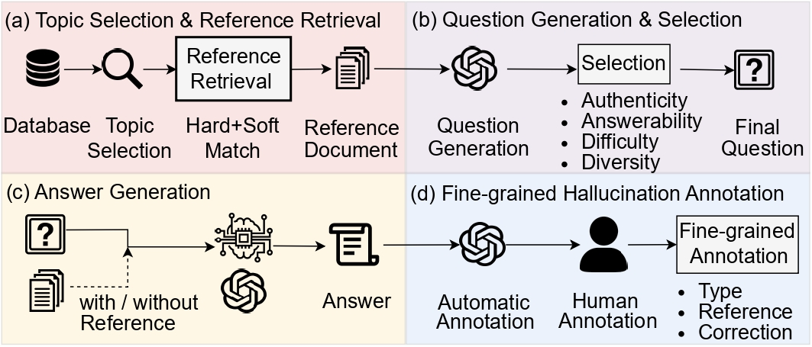 |
ANAH: Analytical Annotation of Hallucinations in Large Language Models
Ziwei Ji*, Yuzhe Gu*, Wenwei Zhang, Chengqi Lyu, Dahua Lin, Kai Chen The 62nd Annual Meeting of the Association for Computational Linguistics (ACL 2024) [Paper] [Code] [Project] |
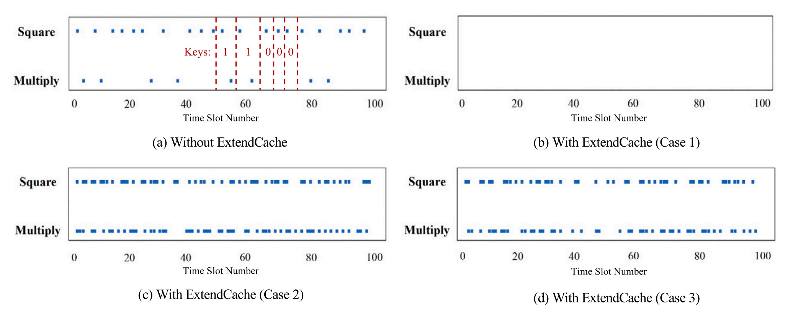 |
One more set: Mitigating conflict-based cache side-channel attacks by extending cache set
Yuzhe Gu, Ming Tang, Quancheng Wang, Han Wang, Haili Ding Journal of Systems Architecture (JSA) [Paper] |
Co-author Papers
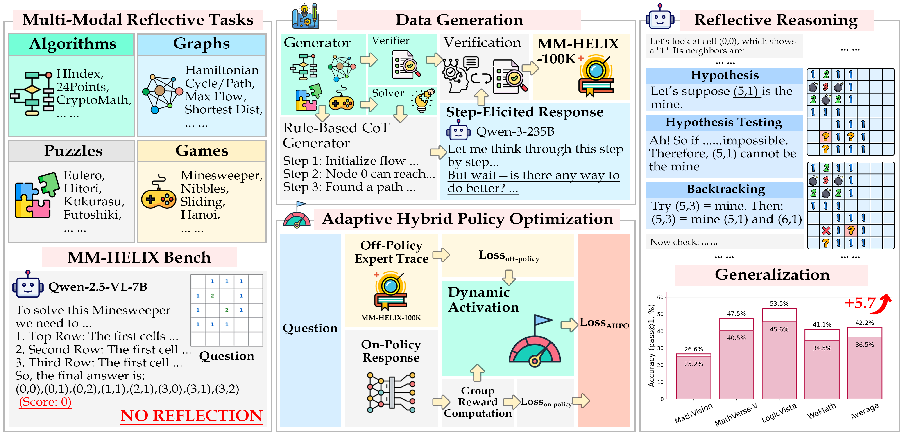 |
MM-HELIX: Boosting Multimodal Long-Chain Reflective Reasoning with Holistic Platform and Adaptive Hybrid Policy
Optimization
Xiangyu Zhao, Junming Lin, Tianhao Liang, Yifan Zhou, Wenhao Chai, Yuzhe Gu, Weiyun Wang, Kai Chen, Gen Luo, Wenwei Zhang, Junchi Yan, Hua Yang, Haodong Duan, Xue Yang The Fourteenth International Conference on Learning Representations (ICLR 2026) [Paper] [Project] |
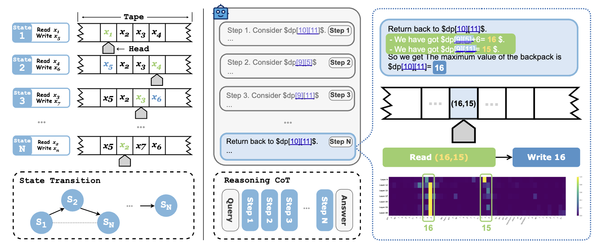 |
The Imitation Game: Turing Machine Imitator is Length Generalizable Reasoner
Zhouqi Hua, Wenwei Zhang, Chengqi Lyu, Yuzhe Gu, Songyang Gao, Kuikun Liu, Kai Chen The Fourteenth International Conference on Learning Representations (ICLR 2026) [Paper] |
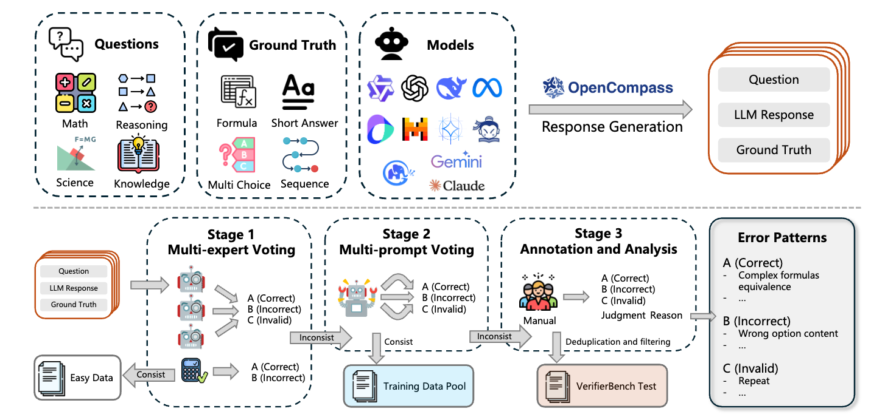 |
CompassVerifier: A Unified and Robust Verifier for LLMs Evaluation and Outcome Reward
Shudong Liu, Hongwei Liu, Junnan Liu, Linchen Xiao, Songyang Gao, Chengqi Lyu, Yuzhe Gu, Wenwei Zhang, Derek F. Wong, Songyang Zhang, Kai Chen The 2025 Conference on Empirical Methods in Natural Language Processing (EMNLP 2025) [Paper] [Project] |
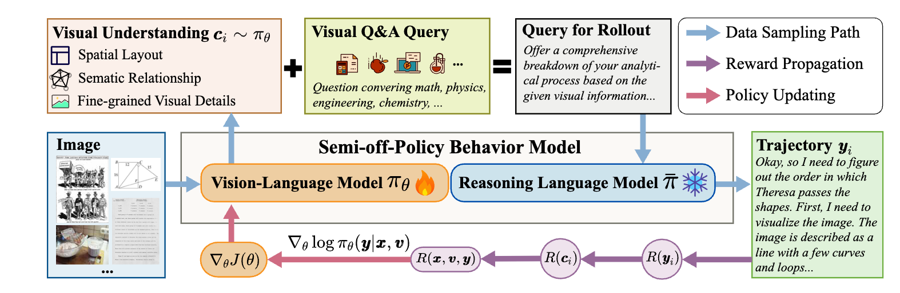 |
Semi-off-Policy Reinforcement Learning for Vision-Language Slow-thinking Reasoning
Junhao Shen, Haiteng Zhao, Yuzhe Gu, Songyang Gao, Kuikun Liu, Haian Huang, Jianfei Gao, Dahua Lin, Wenwei Zhang, Kai Chen The Thirty-ninth Annual Conference on Neural Information Processing Systems (NeurIPS 2025) [Paper] |
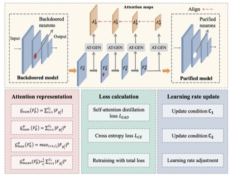 |
Redeem myself: Purifying backdoors in deep learning models using self attention distillation
Xueluan Gong, Yanjiao Chen, Wang Yang, Qian Wang, Yuzhe Gu, Huayang Huang, Chao Shen 44th IEEE Symposium on Security and Privacy (Oakland 2023) [Paper] |